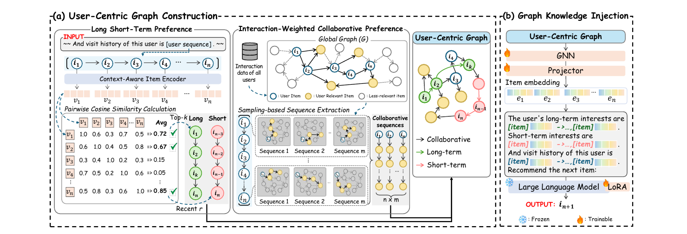
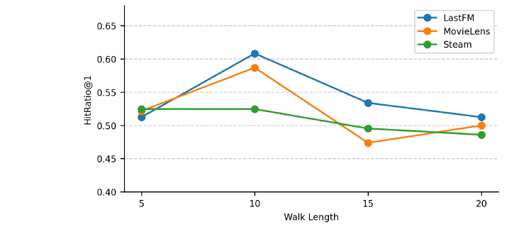

目录 · 11 节
1UCGRec 解决什么问题2先说清楚：用户中心图是什么3三路信号怎么挑出来4图怎么进入 LLM5实验设定：20 选 1 的 HR@16主结果7消融：哪个设计真正起作用8证据里的问题9成本10如果要在自己的系统里试11结论和评价UCGRec 做的是 LLM 序列推荐：给 LLaMA 2-7B 一段用户历史和 20 个候选，让它直接写出用户下一个会看的电影、听的歌手或买的玩具。它的贡献是把三类用户信号先各自筛一遍，再连成一张只属于这个用户的小图，用 GNN 编码后塞进 prompt。三类信号是语义上一致的长期兴趣、最近几次行为，以及从这个用户历史里的各个 item 出发、在由全体用户的转移关系构成的全局图上随机游走采样出来的协同路径。消融里收益最大的设计是“只用这张小图、不用全量协同图”：LastFM 上 HR@1 从 0.4391 升到 0.5447（表 4）。主实验四个数据集平均 HR@1 为 0.5252，高于 LLaRA 的 0.4895（表 1）。我的判断是：思路清楚、可以借鉴，但主评测是 20 选 1（全量检索只在两个数据集上补测），几张附录表的数字和主表对不上，冷启动实验的文字结论也比表里的数字说得更满。
UCGRec 解决什么问题
LLM 推荐的做法是把用户历史写成文字 prompt，让模型生成下一个物品。作者认为这样有三个毛病：历史里混着误点和随手探索，全部喂进去会干扰判断；长期兴趣、短期兴趣、相似用户的协同信号，以往的方法通常只用其中一种；即使三种都给，分别罗列在 prompt 里，模型也看不出它们之间的关系，token 还更多。
UCGRec 针对这三点各做了一件事：用 item 描述的语义相似度挑出“稳定兴趣”，用带权重的图游走只取和这个用户相关的协同路径，再把这些路径和用户自己的序列并到同一张图里。GNN 读这张图，产出的 item embedding 经过一个 MLP projector 映射到 LLM 的 token 空间，跟在 prompt 里对应 item 标题的后面。GNN、projector 和 LLM 的 LoRA 一起端到端训练（第 3.2 节）。

先说清楚：用户中心图是什么
理解这篇论文，关键是分清两张图。
全局图是用全部用户的行为建的：每个 item 是一个节点，只要某个用户先点了 A 紧接着点了 B，就从 A 向 B 连一条有向边，边权等于这个先后顺序在整个数据集里出现的次数（第 3.1 节）。这张图在 LastFM 上有 4,606 个节点，也就是全部歌手（表 11）。
用户中心图是给每个用户单独建的小图。节点来自四个地方：用户最近 10 条历史本身；从中挑出的长期序列；最近 r 条构成的短期序列；从全局图上以用户历史里每个 item 为起点走出来的协同路径。连边的规则是每条序列内部相邻的 item 连一条边：用户历史和短期序列按时间顺序连，长期序列按相似度排好的顺序连（图 1 里的粉色和绿色边），协同路径按游走顺序连（黑色边）。这几路序列用的是同一批 item 节点，协同路径的起点又都是用户历史里的 item，所以它们自然连成一张图；同一条边出现在多路序列里，权重就累加。LastFM 上这张小图平均 192.22 个节点（表 11）。
作者的主张可以概括成一句话：协同信号有用，但要只取和这个用户相关的那一小块，用图结构而不是平铺文本交给 LLM。后面的消融基本都在检验这句话。
三路信号怎么挑出来
长期兴趣靠语义一致性来挑。item 标题本身信息太少，作者先让 LLaMA 3-8B 根据标题写一段描述（类型、剧情摘要等），再用 Sentence-BERT 把描述编码成向量。对用户历史里的每个 item，算它和历史中所有 item 的平均余弦相似度，取分数最高的 k 个，作为长期序列（公式 1、2）。直观地说，一个用户看了七部喜剧和两部恐怖片，平均相似度高的会是那几部喜剧，偶然点开的纪录片分数最低，被丢掉。
短期兴趣最简单，就是最近的 r 个 item（公式 3）。
协同信号靠在全局图上游走。从用户历史的每个 item 出发，走 z 步得到一条路径，每个起点重复 m 次。每一步以概率 α 走向边权最大的邻居，以 1−α 的概率随机选一个邻居（公式 4）。α 取 0.6，作者的解释是留出随机性，避免路径总被少数热门转移带走。默认参数是 k=r=3、m=6、z=10（附录 A.5）。
游走长度 z 决定这张小图会不会退化成全局图。图 3 画的是不同 z 下的 HR@1：LastFM 和 MovieLens 都在 z=10 时最高，再往长走就下降；Steam 在 z=10 之前基本持平，之后也下降。作者的解释是走得越远，路径越像全局图，混进来的无关用户越多（附录 A.7），这说明限制游走范围、减少无关信息有助于保留目标用户的信号，和表 4 的结论方向一致；不过实验同时改变了范围和相关性，没有单独验证图规模本身的作用。

图怎么进入 LLM
节点的初始向量用预训练好的 SASRec item embedding（64 维）。GNN 按边权聚合邻居：LastFM 聚合 1 跳邻居，其余三个数据集聚合 4 跳（附录 A.5）。GNN 输出的向量经 MLP projector 映射到 LLaMA 2-7B 的 token 维度。
prompt 的形状是这样的（附录表 14）：“这个用户的长期兴趣是 [item][向量] → … ；短期兴趣是 [item][向量] → … ；浏览历史是 [item][向量] → … ；请从下面 20 部电影里选出下一部。”长期、短期和历史三段序列里，每个 item 标题后面紧跟一个由用户中心图经 GNN 和 projector 算出来的向量 token（第 3 节）。附录表 14 用颜色区分两类向量：LLaRA 的 prompt 里是灰色的预训练向量，只含简单协同信息；UCGRec 的三段序列里是蓝色的向量，融合了用户中心图的知识。训练时 LLM 主体冻结，只更新 LoRA（rank 8）、GNN 和 projector，可训练参数 37.1M，比 LLaRA 的 37.0M 只多一点（表 11）。
这和 LLaRA 的区别要说准。LLaRA 也在 item 标题后面拼预训练的 ID embedding，这些预训练 ID 向量本身包含间接的协同信息，但没有按目标用户的图做邻居聚合；UCGRec 的向量经过 GNN 聚合了用户中心图上的邻居，所以同一个 item 出现在不同用户的 prompt 里，向量会不一样。
实验设定：20 选 1 的 HR@1
实验用了 MovieLens、Steam、LastFM 和 Amazon Toys 四个公开数据集，规模都不大，最大的 Toys 有 97,682 个用户（附录表 9）。预处理沿用 LLaRA，每个用户只保留最近 10 条行为（附录 A.3），所以这里的“长期兴趣”其实是从 10 条里挑 3 条，和工业界动辄上千条的长序列不是一回事。
评测方式决定了怎么读后面的数字。每条测试样本给模型 20 个候选：1 个真实的下一个 item，加 19 个用户没交互过的随机 item（附录 A.5）。20 个候选里只有 1 个正确答案，所以随机猜的 HR@1 期望是 0.05。ValidRatio 是模型输出能对上候选列表中某个 item 的比例；作者认为它在 0.95 以上时 HR@1 才可信（第 4.3 节），因为输出了候选以外的东西就算不上推荐。温度设为 0，取 5 个随机种子的均值。
对比对象分三类：传统序列模型 GRU4Rec、SASRec、GCE-GNN；零样本 LLM，即 LLaMA 2-7B 和 GPT-4o；微调的 LLM 推荐方法，TALLRec 和 LLaRA 用 LoRA 微调 LLM，A-LLMRec 和 LLM-SRec 冻结 LLM、只训练编码器和 projector（第 4.2 节）。
主结果
| 方法 | LastFM | MovieLens | Steam | Toys | 平均 |
|---|---|---|---|---|---|
| SASRec | 0.2233 | 0.3444 | 0.4010 | 0.4157 | 0.3457 |
| GCE-GNN | 0.3181 | 0.4295 | 0.4484 | 0.2405 | 0.3591 |
| GPT-4o（零样本） | 0.3443 | 0.2151 | 0.3653 | 0.4127 | 0.3344 |
| TALLRec | 0.4974 | 0.4695 | 0.4356 | 0.4843 | 0.4717 |
| LLaRA | 0.4803 | 0.4758 | 0.4886 | 0.5133 | 0.4895 |
| LLM-SRec | 0.3590 | 0.4211 | 0.4862 | 0.3749 | 0.4103 |
| UCGRec | 0.5447 | 0.4949 | 0.5040 | 0.5574 | 0.5252 |
表中都是 HR@1，取自表 1。UCGRec 在四个数据集上都是第一，平均比 TALLRec 高 11.3%、比 LLaRA 高 7.3%（相对提升，第 5.1 节），作者报告差异在 p<0.05 下显著。它的 ValidRatio 在四个数据集上都高于 0.97，说明模型几乎总能输出候选里的 item，HR@1 可以当真。
这张表要看两处细节。和 UCGRec 最接近的是 LLaRA，而 LLaRA 恰好是“在 prompt 里拼预训练 item 向量”的方案，所以 7.3% 这个差距比和 GPT-4o 的比较更有参考价值；不过它是整套 UCGRec 相对 LLaRA 的提升，两者在长短期偏好提取和 prompt 上也不同，不能全部归因于图聚合。另一处是 Steam：UCGRec 0.5040 对 LLaRA 0.4886，差距只有 0.0154，四个数据集里最小。
消融：哪个设计真正起作用
论文做了三组消融，下表把它们放在一起，数字都是 HR@1：
| 对照 | LastFM | MovieLens | Steam | Toys | 出处 |
|---|---|---|---|---|---|
| 只用长期信号 | 0.5146 | 0.4750 | 0.4962 | 0.5121 | 表 2 |
| 只用短期信号 | 0.5328 | 0.4215 | 0.4829 | 0.5497 | 表 2 |
| 只用协同信号 | 0.5344 | 0.4586 | 0.4675 | 0.5504 | 表 2 |
| 长期改为随机抽样 | 0.4869 | 0.4745 | 0.5008 | 0.5493 | 表 3 |
| 长期改为全部历史 | 0.5146 | 0.4743 | 0.4984 | 0.5304 | 表 3 |
| 协同改用全局图 | 0.4391 | 0.4765 | 0.4897 | 0.5179 | 表 4 |
| 完整 UCGRec | 0.5447 | 0.4949 | 0.5040 | 0.5574 | 表 2 |
三路信号单独用都不如合起来用：只用协同信号的平均 HR@1 是 0.5027，三路合起来是 0.5252（表 2）。分数据集看，MovieLens 和 Steam 上长期信号更有用，LastFM 和 Toys 上短期信号更有用，作者归因于音乐和玩具更受近期流行影响。
长期序列的语义挑选在 LastFM 上作用明显，换成随机抽样掉了 0.0578；在 Steam 上几乎没差别，因为三种挑法的结果都在 0.50 上下（表 3）。
协同信号的来源是全文最关键的一组对照。保持其他部分不变，只把用户中心图换成全局图，四个数据集全部下降，LastFM 上差了 0.1056（表 4）。更说明问题的是，用全局图的 UCGRec 在 LastFM 上还不如 LLaRA 的 0.4803。这意味着在这组对照里，用户中心图明显优于全局图，支持“有选择地只给 LLM 和目标用户相关的协同信息”这个思路，这是我认为这篇论文最值得记住的一点。
证据里的问题
数字之间对不上。LastFM 上 UCGRec 的 HR@1 在主表里是 0.5447（表 1），在成本表（表 11）和长短期长度分析的默认设置那一格（表 10）里都是 0.6083，图 3 在 z=10 处的 LastFM 点也落在 0.61 附近。LLaRA 同样有两个数，表 1 是 0.4803，表 11 是 0.5246。同一个方法、同一个数据集、同一组默认参数给出两套结果，所以读者无法确定附录分析和主表是不是同一套评测。
参数说法也不一致。附录 A.5 说长期和短期序列长度默认都是 3；附录 A.6 又说 MovieLens、Steam 和 Toys 的最佳长期长度是 5，表 10 的数字支持后一种说法，这意味着主表用的到底是哪组参数并不确定。
冷启动的结论说得比表满。正文说在冷门和热门 item 两种情形下 UCGRec“都超过所有基线”（第 6.4 节），但表 6 里有两格不是这样：MovieLens 热门 item 上 TALLRec 是 0.4732，高于 UCGRec 的 0.4502；Steam 冷门 item 上 LLM-SRec 是 0.2800，高于 UCGRec 的 0.2151。冷用户实验（表 7，只有 3 次交互的用户）里 UCGRec 只在 LastFM 和 Toys 上第一，作者对此如实写了。
评测本身偏简单。20 个候选里 19 个是随机未交互 item，模型只需要从一堆随机物品中认出真实的那个。这个设定沿用自 LLaRA，横向比较是公平的，但它离召回或精排面对的候选规模差得很远。作者补了一个全量检索的实验（表 8）：仿照 LLM-SRec，把 LLM 的输出表示经一层 projection 映射到 item embedding 空间，再按相似度从全部 item 里取 top-K，模型就不必逐个生成标题。LastFM 上 UCGRec 的 Hit@10 是 0.6230，LLaRA 是 0.5164；MovieLens 上是 0.6653 对 0.4126。这组数据支持了主结论，但只覆盖两个数据集。
还有一点关于 Steam 的解释。作者说只用协同信号在 Steam 上表现差，是因为 Steam“交互多、item 少，建出的图很稀疏”（第 5.2 节）。交互多、item 少，按常理图应该更稠密，这个解释站不住，更可能的原因是热门游戏的转移边权过大、游走被少数节点吸走，但这只是我的推测。
成本
表 11 在 LastFM 上比了三种方案。用户中心图每个 epoch 训练 77.82 分钟，全局图 104.57 分钟，LLaRA 46.47 分钟；单用户推理 2.34 秒、2.36 秒、2.31 秒；总参数都是 6.8B。UCGRec 比 LLaRA 训练慢约 67%，推理几乎一样，因为推理开销主要在 7B 模型本身。描述生成要额外跑一遍 LLaMA 3-8B，不过每个 item 只需离线生成一次。
2.34 秒一个用户，放在线上排序链路里是不现实的。这篇论文的价值在于方法思路，而不在于这套系统能直接部署。
如果要在自己的系统里试
最便宜的实验不需要 LLM。用户中心图这个想法可以单独拿出来：对每个用户，从全局 item 转移图上以其最近行为为起点，用“60% 走最大边权、40% 随机”的规则走 10 步左右，得到一个几百节点的小图，用 GNN 聚合出用户相关的 item 向量，替换现有精排模型里的历史序列 embedding。对照组用同样的 GNN 跑全量图。表 4 的结论如果在你的数据上成立，局部图应该明显优于全量图。
长期序列的语义筛选也可以单独测：用现有的 item 文本 embedding 算历史内两两相似度，去掉平均相似度最低的几条，看点击率预估或召回指标是否提升。表 3 显示这一步在 LastFM 上收益明显、在 Steam 上几乎为零，所以收益很可能取决于用户历史有多杂。
结论和评价
UCGRec 的进展在于：它把“只取和当前用户相关的协同子图”和“长短期兴趣”放进同一张图，再通过 GNN 向量交给 LLM，而不是像 LLaRA 那样只给每个 item 一个与用户无关的向量。最有力的证据是表 4，用户中心图在四个数据集上都超过全局图，LastFM 上超过 0.1。
证据的弱点也很明确：主表和附录表对同一设置给出两套数字，冷启动结论和表 6 不符，主评测是 20 选 1，全量检索只补测了两个数据集。我会把它当成一个值得在自己数据上复现的想法，先在非 LLM 的排序模型里验证局部图和全局图的差距，而不是把论文里 7.3% 的提升当作可以预期的收益。
读完这篇，你觉得
夜读鸮记下了，谢谢你的反馈。
点一下即可，无需登录；再点一次撤回。只统计匿名次数，不记录你是谁。
讨论
欢迎补充实验细节、复现经验或不同看法。需 GitHub 登录。
正在加载讨论…